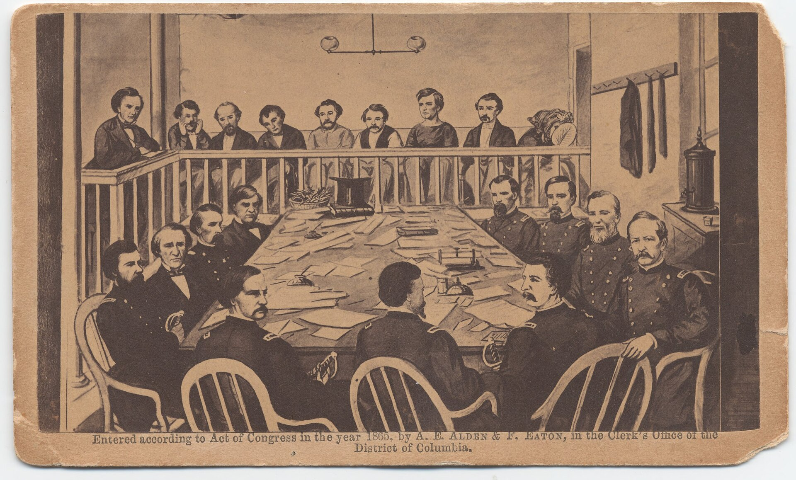

Chapter 15
The Verdict at the Old Arsenal
Seen from above, the Old Arsenal Penitentiary on the morning of June 30, 1865, held two processes at once: in the courtroom the prisoners would hear their sentences, and in the yard, within earshot of the cells to which they would then return, their own gallows was rising. One was a process of words, the other of wood and rope; they proceeded simultaneously through the same compound, neither acknowledging the other, each dependent on the other’s completion.
Inside the courtroom, the accumulated weight of seven weeks’ testimony had settled into its final form. Three hundred sixty-six witnesses, thousands of pages of depositions, the fevered reconstruction of a conspiracy that had begun in taverns and boarding houses and ended in a burning barn on the Rappahannock—all of it now awaited the military commission’s formal pronouncement. The nine officers sat in dress uniforms, their verdicts already decided in private deliberation. Outside, Washington sweltered in summer heat. The war had been over for two months. The machinery of retribution had one final function to perform.
Three hundred yards away, in the courtyard of the same prison complex, soldiers worked with lumber hauled from government stores and ropes tested for tensile strength. The scaffold rose twelve feet high, a platform of rough planks built to accommodate four drops simultaneously. Beneath it, four graves were being dug in the heavy clay earth, each six feet deep, positioned so that the fall would carry the condemned directly into their final resting place. The graves lay in a line, parallel to the prison wall, close enough that the executed would be interred before the spectators dispersed.
The contrast between these two scenes measured the distance between the trial’s judicial vocabulary and its actual purpose. The courtroom offered the language of law. The courtyard offered the fact of death itself, built in wood and rope and excavated earth. Neither scene could exist without the other. The commission would pronounce; the soldiers would build. The gap between word and deed was the space in which the execution’s meaning would be constructed.
—-
Inside the courtroom, the proceedings moved with the deliberate pace of military ritual. The prisoners sat in their customary places: Mary Surratt in her black mourning dress, Lewis Powell with his wounded shoulder still bandaged from his attack on the Secretary of State, David Herold affecting a lightness that fooled no one, George Atzerodt pale and trembling. The hoods that had covered them during transport had been removed for the hearing itself, but the memory of that humiliation lingered—the canvas bags that rendered each prisoner anonymous, interchangeable, a problem of custody rather than a person with a face.
General David Hunter, president of the commission, read the verdicts aloud. The four principal conspirators were found guilty of conspiracy to murder the President, the Secretary of State, and the Vice President, and of maliciously aiding and abetting the murder of Abraham Lincoln. The sentence was death by hanging. For Samuel Mudd, Samuel Arnold, and Michael O’Laughlen, the sentence was imprisonment at hard labor—Mudd and Arnold for life, O’Laughlen for six years. Edman Spangler, the stagehand at Ford’s Theater, received six years for aiding Booth’s escape.
The reading took hours. Each verdict required its own formal language, its own specification of crimes and penalties. The prisoners heard their fates without visible reaction, or at least none that the reporters could agree upon. Some accounts described Mary Surratt as collapsing; others insisted she remained composed, her hands folded in her lap, her gaze fixed on some middle distance. Powell sat motionless. Herold smiled at intervals as if at a private joke. Atzerodt wept.
The formalities concluded by mid-afternoon. The prisoners were hooded again for the return to their cells. The commission had done its work; the sentences would be forwarded to President Johnson for review, but no one expected clemency. The verdicts were not merely judicial determinations but political necessities. The manhunt that Edwin Stanton had directed from his office in the War Department had produced its narrative through twelve days of pursuit. The trial had validated that narrative through seven weeks of testimony. What remained was the execution itself, the physical act that would complete the sequence and close the account.
—-
In the courtyard, the construction continued through the afternoon and into the evening of June 30. The scaffold required precise engineering: four trap doors, each operated by a separate mechanism, all designed to drop simultaneously at the signal. The drops themselves were calculated at six to eight feet, sufficient to break the neck without decapitation. The ropes were manila hemp, three-quarter-inch diameter, tested that morning with sandbags to ensure they would not stretch or snap.
The soldiers worked methodically, supervised by officers who had received their orders through channels that led back to Stanton’s office. There was no secrecy about the construction; indeed, its visibility was part of its function. The scaffold rose in full view of the prison windows, and the prisoners in their cells could hear the hammering, the sawing, the shouted orders of the work crews. The sound of construction was itself a sentence, a countdown measured in carpentry.
The graves were dug by laborers from the quartermaster’s corps, working in shifts through the heat. The earth was heavy clay, difficult to excavate, and the holes had to be finished before the execution could proceed. They were positioned with care: close enough to the scaffold that the bodies could be transferred quickly, far enough that the diggers would not be visible to the spectators who would eventually crowd the courtyard.
By nightfall on June 30, the scaffold stood complete, its raw lumber pale against the prison walls. The graves were finished, their excavated earth piled nearby for backfilling. The ropes hung loose from the crossbeam, their nooses not yet formed. The courtyard had been transformed from a military drill ground into an instrument of state killing, and the transformation was irreversible. Whatever Johnson might decide in the matter of clemency, the physical apparatus of execution was now in place.
—-
The prisoners spent their final days in conditions that varied according to their temperament and their guards’ discretion. Mary Surratt occupied the cell closest to the scaffold, and the sound of construction must have reached her continuously. She maintained her innocence with the stubbornness of a woman who had not expected to be caught in the machinery she had helped set in motion.
Her lawyer, Frederick Aiken, had argued that she knew nothing of the assassination plot itself, that her boarding house was merely a meeting place, that her trips to Surrattsville were innocent errands. The commission had not believed him, or had not cared. The testimony of Louis Weichmann, her boarder and former friend, had placed her at the center of the conspiracy’s logistics—too close to Booth, too knowing about the weapons hidden at the tavern, too quick to deliver the field glasses that would guide a fugitive’s flight.

On July 5, President Johnson signed the execution order. The date was set for July 7, a Friday. The interval was calculated to allow for any final appeals, but also to prevent the indefinite postponement that might allow public sentiment to shift. Stanton had urged haste; the nation required closure, and the conspirators required punishment before the war’s end faded from immediate memory.
The condemned received visitors according to their wishes. Surratt was attended by her daughter Anna and by Catholic priests who heard her confession and administered the sacraments. She maintained her innocence to the end, but the priests prepared her for death as a penitent. Powell, who had adopted the name Payne during his confinement, received his own spiritual advisors and wrote letters that would be found among his effects. Herold wrote to his family with the jauntiness that had characterized his entire participation in the conspiracy, as if the gallows were merely another adventure. Atzerodt continued to weep.
The physical preparations accelerated. After Johnson’s order was signed, the scaffold was tested again, the trap doors dropped and reset, the ropes adjusted for the height and weight of the specific prisoners they would kill. The hangman, a military employee whose name was not recorded in the official accounts, practiced his knots and measured his drops. The hoods that would cover the prisoners’ faces in their final moments were sewn from black cloth, with drawstrings to close them tight.
—-
July 7 dawned hot and overcast. The execution was scheduled for one o’clock in the afternoon, a time chosen for maximum visibility and, perhaps, for the symbolic weight of the hour. The courtyard filled with spectators: military officers, government officials, reporters, and a select number of civilians who had secured tickets through political influence. The crowd was estimated at various figures, but all accounts agree that the space was packed to capacity, the air thick with humidity and anticipation.
The prisoners were awakened early. Each received a final meal—breakfast, not the traditional last supper, for the execution would occur after noon. Surratt ate little. Powell consumed a substantial meal with apparent appetite. Herold was described as cheerful, Atzerodt as barely conscious with fear. They were permitted final visits with their spiritual advisors, final letters to their families, final moments of privacy in cells that had become familiar through seven weeks of confinement.
At eleven o’clock, the preparations for transfer began. The prisoners were dressed in the clothes they would wear to their deaths: dark suits for the men, the black dress Surratt had worn throughout her trial. Their arms were bound, their legs shackled. The hoods were not yet applied; that indignity would come at the scaffold itself. They were led from their cells in single file, Surratt first as the only woman, then Powell, Herold, and Atzerodt. The march from the prison building to the courtyard took them past the cells of their condemned companions, past the guards who had watched them for seven weeks, past the windows through which they had heard the construction of their own killing ground.
The crowd fell silent as they appeared. The scaffold dominated the courtyard, its twelve-foot platform accessible by thirteen steps—the number noted by more than one reporter, though whether by design or coincidence no one could say. The four nooses hung in a line, each positioned above its corresponding trap door. Beneath the scaffold, the graves were visible, their openings covered with boards that would be removed at the last moment.
The prisoners were led up the steps and positioned on the platform. Each was placed at his or her assigned station, the noose adjusted around the neck, the knot positioned to the left side to ensure the snap of the vertebrae. The hoods were drawn over their faces, transforming them from individuals into anonymous figures, their humanity reduced to the shape of bodies under cloth. Only their hands remained visible, bound at the wrists, some clenched, some open.
The Catholic priests had given Surratt a crucifix to hold; she gripped it through the hood. Powell had refused the hood initially, then submitted when told it was mandatory. Herold’s last words, audible to those nearby, were a request that his body be returned to his family. Atzerodt said nothing, or nothing that was recorded.
The commanding general of the military district stood ready to give the signal. The execution was a military operation, and its choreography reflected that discipline. At one o’clock, by the watch of the officiating officer, the general dropped his hand. The four traps fell simultaneously. The bodies dropped six feet, the ropes snapped taut, the necks broke with sounds that witnesses described variously as cracks, thuds, or silence.
The hanging was not instantaneous death. Medical officers stepped forward to monitor the bodies for signs of life. Powell’s pulse continued for several minutes; Surratt’s heart was still beating after five. The bodies twitched and swayed in the afternoon heat, the ropes creaking, the hooded heads lolling at angles that demonstrated the success of the drop. The crowd watched in silence, or in murmured commentary, or in the stunned absorption that comes from witnessing the state’s ultimate power over the individual.
After twenty minutes, or thirty—accounts vary—the bodies were cut down. They were placed in simple pine coffins that had been waiting beneath the scaffold, the lids nailed shut immediately to prevent any display of the faces. The coffins were lowered into the prepared graves, the earth shoveled over them, the boards removed and stacked for reuse. The entire operation, from the prisoners’ first appearance to the final shovelful of dirt, had taken less than two hours.
—-
The aftermath proceeded with the same efficiency. The scaffold was dismantled that evening, its lumber returned to government stores or burned. The graves were leveled and sodded, their locations marked only in the quartermaster’s records. The crowd dispersed, the reporters filed their accounts, the officials returned to their offices. The four conspirators who had been sentenced to imprisonment—Mudd, Arnold, O’Laughlen, and Spangler—remained in their cells, listening to the silence where the scaffold had stood.
The execution’s meaning was contested from the first moment. The newspapers of July 8 carried detailed descriptions, some emphasizing the dignity of the proceedings, others their horror. The question of Mary Surratt’s guilt became immediately controversial; her defenders insisted that she had been convicted on insufficient evidence, that her gender should have mitigated her punishment, that President Johnson had refused a last-minute plea for clemency that might have saved her. The President maintained that he had never seen such a plea, that Stanton had suppressed it, or that the evidence of her complicity was too clear to permit mercy.
These disputes would continue for decades, generating books, memoirs, congressional investigations, and the slow transformation of Surratt from convicted conspirator to martyred innocent. The other three executed men received less sympathy. Powell’s brutality toward the Secretary of State, Herold’s complicity in Booth’s flight, Atzerodt’s cowardice and drunkenness—these seemed to justify their fates even to those who questioned the trial’s legitimacy.
But the execution’s primary function was not justice in any abstract sense. It was closure, the definitive end of a narrative that had begun on April 14 with a pistol shot at Ford’s Theater. The twelve days of Booth’s flight, the pursuit through Maryland and Virginia, the burning barn and Boston Corbett’s bullet—all of this had produced a corpse that required burial and a conspiracy that required punishment. The military commission had supplied the punishment; the scaffold at the Old Arsenal had supplied the burial.
—-
The bodies lay in their graves through the summer heat, the clay earth settling over the pine coffins. The prison continued its operations, the cells refilled with other prisoners, other crimes, other sentences. The War Department turned its attention to other matters: the demobilization of the armies, the reconstruction of the South, the political struggles that would shape the postwar nation. Stanton remained at his desk, directing the machinery of government with the same intensity he had brought to the manhunt.
In October 1867, Michael O’Laughlen died of yellow fever in his prison cell at Fort Jefferson, in the Dry Tortugas. He had been transferred there with Mudd, Arnold, and Spangler, the four survivors of the conspiracy serving their sentences in the tropical heat of a military prison built on a coral reef. His death was not execution but disease, not public theater but private extinction. The others would survive: Mudd to be pardoned in 1869 and return to Maryland, Arnold to write his memoirs, Spangler to drift into obscurity.
The four graves in the Old Arsenal yard remained unmarked. In 1867, the Surratt family secured permission to exhume Mary Surratt’s body and reinter it in a Catholic cemetery, where her tombstone would eventually proclaim her innocence. The others stayed where they had been thrown, their locations eventually forgotten, their bones commingled with the earth of the prison yard. The scaffold had been dismantled, the ropes burned, the records filed. The bodies are buried in the arsenal yard; the gallows are dismantled. The immediate legal and retributive aftermath of April 14 is concluded.